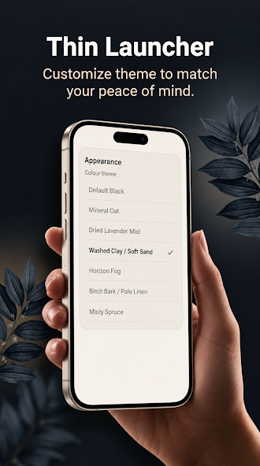

Self-improvement, as a category, has a quiet problem: most of it asks you to add something to an already full life. Add a meditation practice. Add a workout. Add a journal. Add a reading habit. Every one of those is good in isolation, and every one of them competes for the same limited pool of motivation, time, and attention that your phone is also competing for — usually winning.
There's a smaller, less glamorous version of self-improvement that doesn't ask you to add anything: it asks you to look at what's already shaping your behaviour by default, and adjust that instead. Your phone's home screen is one of the clearest examples of this. You didn't consciously design it as a self-improvement tool, but it's been functioning as one — just not necessarily in the direction you'd choose.
Self-improvement usually starts in the wrong place
A lot of self-improvement attempts fail for a boring, structural reason: they try to install a new behaviour directly on top of an environment that's still optimized for the old one. You decide you want to read more, but your home screen still puts a feed one tap away and your book zero taps away (because it's not an app, it's a physical object somewhere else). You decide you want to be more present at dinner, but your phone is still sitting there, screen-lit, buzzing on the table.
The behaviour you're trying to build isn't competing on equal footing with the behaviour you're trying to replace. The old behaviour has a shorter path — fewer taps, zero friction, immediate reward. The new behaviour usually has a longer path and a delayed reward. When two behaviours compete on convenience alone, convenience tends to win, regardless of how much you "want" the other one. This is a basic, well-understood pattern in behavioral science, not a character flaw.
So the first self-improvement move that actually works isn't picking a new habit. It's noticing which existing paths are shortest, and asking whether those are the paths you'd choose on purpose.
Your home screen is a habit interface, whether you chose it or not
Every icon on your home screen is a one-tap path to a behaviour. That's true whether you deliberately arranged it that way or whether it just accumulated — an app installed for one use, left there, now sitting in your peripheral vision fifty times a day. Over time, repeated exposure to an icon in the same spot, combined with the small reward of opening it, builds exactly the kind of automatic trigger-behaviour-reward loop that habits are made of. You're not failing to resist those apps through weak willpower; you're responding, very normally, to a layout that was never audited for whether it matches what you actually want to be doing.
This is the part self-improvement conversations tend to skip. People talk about "building better habits" as if habits form in a vacuum, independent of environment. They don't. The environment — and your home screen is a genuinely significant piece of your daily environment — either supports the habit you want or quietly works against it, usually without you noticing which.
The smallest self-improvement habit: curate what you see first
Here's the practical version. Instead of adding a new app, a new tracker, or a new routine, spend two minutes auditing what's actually on your home screen right now, and ask one question of each icon: did I choose this on purpose, or did it just end up here?
Most people find the answer is a mix. A few apps are there because they genuinely matter — messaging, maps, whatever tool you actually use intentionally. A handful of others are there out of habit, inertia, or because they're the ones most likely to pull you into an unplanned ten, twenty, forty minutes. Those are the ones worth moving off the home screen entirely — not deleting, not blocking, just relocating to the app drawer, where reaching them takes an actual search instead of a reflexive tap.
This single move — reducing the number of apps on your home screen to a small, deliberately chosen set — is self-improvement in its most literal sense: improving the self by improving the small daily system the self operates inside of. It doesn't require discipline to sustain, because you're not resisting anything moment to moment; you changed the default once, and the default keeps working for you after that.
Why starting small here actually sticks
A common reason bigger self-improvement efforts don't stick is that they require constant decisions: deciding to meditate today, deciding to skip the feed today, deciding to read instead of scroll today. Decisions are tiring, and willpower is a finite resource that gets spent down over the course of a day — a pattern researchers generally describe under the idea of decision fatigue. By evening, the version of you making decisions is a worse negotiator than the version of you that set the intention that morning.
A home screen change sidesteps this almost entirely. You make the decision once — what stays, what moves — and then the environment enforces it automatically, with no decision required each time you unlock your phone. That's a structurally different kind of self-improvement than habits that need to be chosen fresh every day. It's closer to meal-prepping your attention than to willing yourself through another craving.
Pairing a smaller home screen with other self-improvement goals
None of this replaces whatever your actual self-improvement goal is — more focused work, more reading, more presence with people around you, more sleep. What it does is remove one of the most common sources of friction working against those goals. If your goal is to read more and your home screen puts a feed one tap away and nothing book-related anywhere near it, the environment is quietly fighting your goal all day. Rearrange that one layer, and every other self-improvement habit you're trying to build gets a slightly easier path, because the shortest, most automatic tap on your phone no longer leads somewhere that undoes the rest of your intentions.
This is also a useful lens if you've tried self-improvement apps before and found them exhausting to maintain. A tracker that demands daily logging is one more thing competing for your attention. A home screen you've already curated once keeps working in the background, with nothing to log and nothing to remember to open.
Where a tool like Thin Launcher fits

Thin Launcher is one practical way to make this change stick rather than slowly drift back to normal. It hard-limits your home screen to 7 apps on the free tier (11 on Pro, a one-time purchase — no subscription, ever) and tucks everything else into the app drawer, a search away. It's not a habit tracker and it doesn't monitor your screen time or block anything by schedule; it simply makes the "which apps get the shortest path" decision permanent instead of something you have to keep re-deciding. The free tier includes optional ads you can remove with a one-time Ad-Free purchase, and there are small one-time tip options if you want to support development — that's the entire monetization model, deliberately kept that simple.
If you're specifically trying to build discipline around how often you reach for your phone in the first place, our piece on building self-discipline when your phone is always there goes further into treating discipline as environment design rather than willpower. And if you want the broader reasoning behind why fewer visible choices leads to calmer, more intentional use generally, see phone minimalism and a simpler home screen.
Start the smallest version of self-improvement:
curate what's on your home screen.
Get Thin Launcher on Google Play